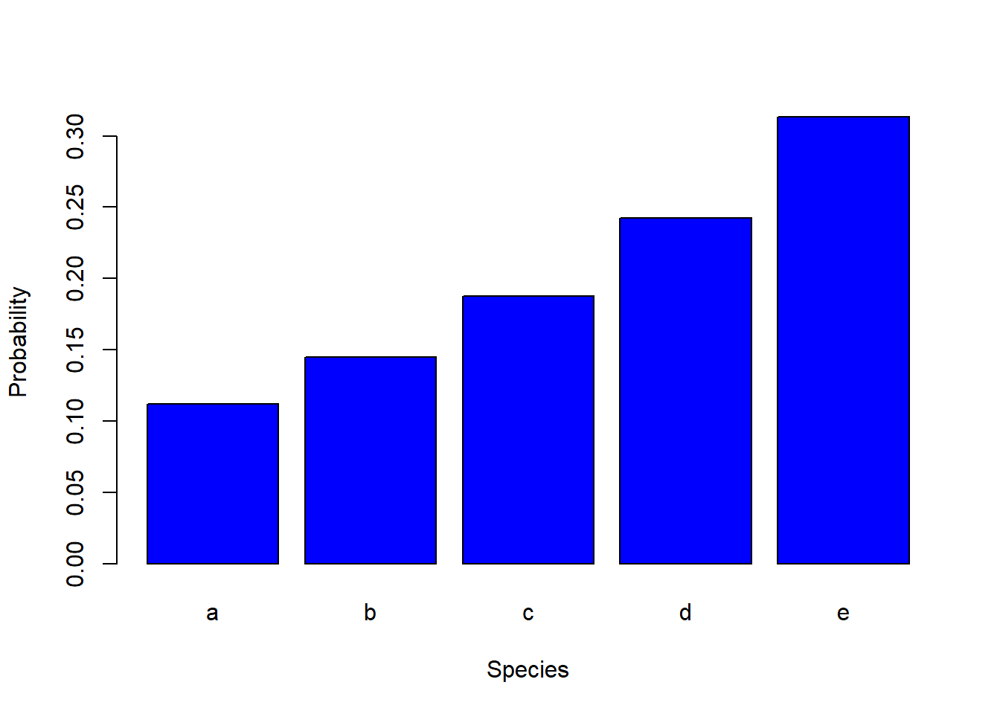
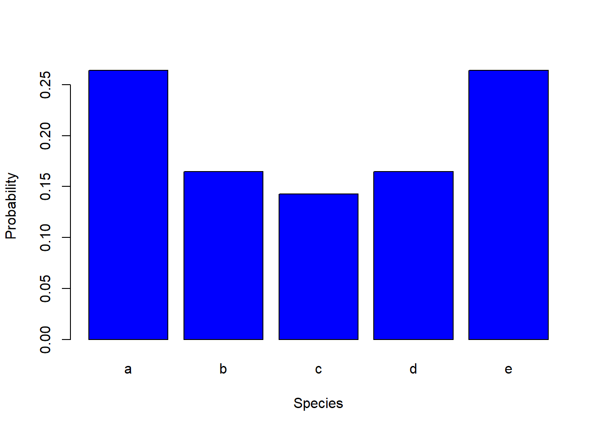
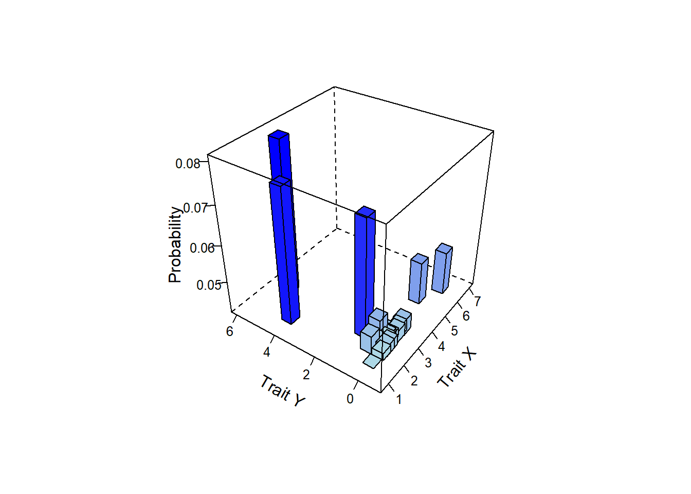
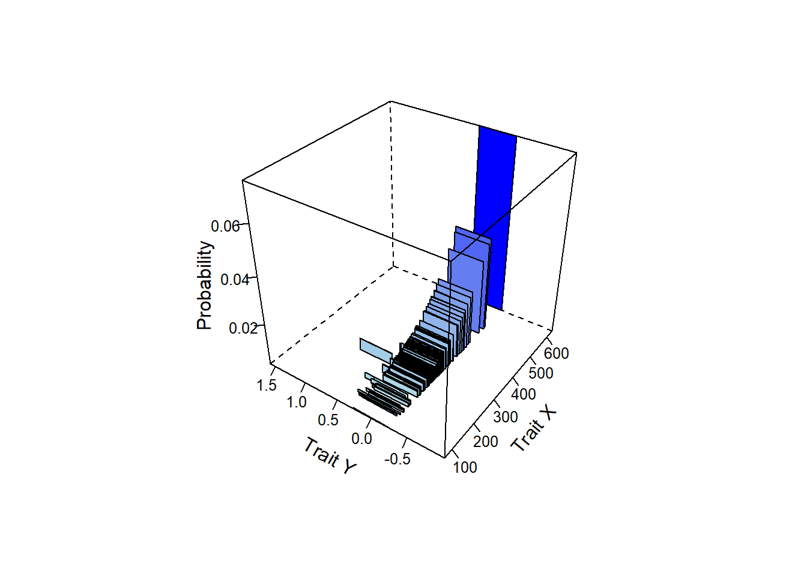
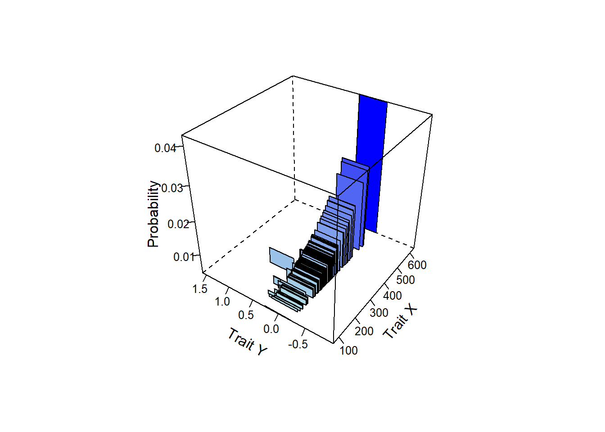

library(here)
library(tidyverse)
library(Select)
rm(list = ls())Analysis of Ecological Data
Calculate communities based on traits
Technichal University of Munich, TUM School of Life Sciences, Chair of Restoration Ecology, Emil-Ramann-Straße 6, 85354 Freising, Germany
 https://orcid.org/0000-0001-5372-4174
https://orcid.org/0000-0001-5372-4174


Original vignette by Laughlin et al. (2018)
1 Preparation
The package Select determines species probabilities (i.e., relative abundances) that satisfy a given functional trait profile. Restoring resilient ecosystems requires a flexible framework for selecting assemblages that are based on the functional traits of species. However, current trait-based models have been limited to algorithms that can only select species by optimising specific trait values, and could not elegantly accommodate the common desire among restoration ecologists to produce functionally diverse assemblages. We have solved this problem by applying a non-linear optimisation algorithm that optimises Rao Q, a closed-form functional trait diversity index that incorporates species abundances, subject to other linear constraints. This framework generalises previous models that only optimised the entropy of the community, and can optimise both functional diversity and entropy simultaneously. This package can also be used to generate experimental assemblages to test the effects of community-level traits on community dynamics and ecosystem function.
1.1 Load libraries and functions
The Select package is of Laughlin et al. (2018)
1.2 Load data
traits_ammer <- read_csv(
here("data", "processed", "data_processed_traits_ammer_4.1.csv"),
col_names = TRUE, col_types = cols(.default = "?")
)2 Calculation of species compositions
2.1 Using one trait
Create a simple trait dataset using a species pool of 5 species with trait values 1 through 5.
traits_one <- tibble(.rows = 5) %>%
mutate(
traitX = 1:5, # Set trait values for each species from 1 to 5
name = letters[row_number()] # Most datasets have species names as row names, so let's add arbitrary row names using letters
) %>%
column_to_rownames("name") %>%
as.matrix() # Note that we make this a matrix to pass it into the function2.1.1 Constrain to CWM = 3.5
Let us start with the most basic use of the function: to derive a species abundance distribution where we only want to constrain the abundances so that the community has a community-weighted mean (CWM) trait equal to 3.5.
We will define four arguments in the function for this example t2c: this is the matrix of species trait values that we want to constrain constraints: this is a vector of CWM trait values. In this case, we only have a one dimensional matrix of t2c, so this vector should contain only one element: 3.5 t2d: when you are not maximizing functional diversity, simply specify the same matrix here as you did for t2c obj: this is the objective function that is being maximized. In this example we are not maximizing functional diversity, so we use the entropy function (H)
result1 <- Select::selectSpecies(
t2c = traits_one,
constraints = c(traitX = 3.5),
t2d = traits_one,
obj = "H"
)
Iter: 1 fn: -1.5461 Pars: 0.11205 0.14490 0.18738 0.24231 0.31335
Iter: 2 fn: -1.5461 Pars: 0.11205 0.14490 0.18738 0.24231 0.31335
solnp--> Completed in 2 iterationsSelect::plotProbs(result1, traits_one, xlab = "Species")
2.1.2 Constrain to CWM = 3.5 and maximize Rao Q
We will now see what happens when we maximize Rao Q (Q, quadratic entropy), an index of functional diversity, rather than maximizing entropy.
result2 <- Select::selectSpecies(
t2c = traits_one,
constraints = c(traitX = 3.5),
t2d = traits_one,
obj = "Q"
)
# Note the only difference with result1 is a different objective function (Q).
Select::plotProbs(result2, traits_one, xlab = "Species")Interestingly, the CWM trait value is the same for both result1 and result2, but the species abundance distributions are radically different. When maximizing Rao Q, this makes the most functionally dissimilar species the most abundant, and all species in the middle of the trait distribution have vanishingly small abundances. This is not a desirable solution for ecological restoration. One way to fix this is to optimize both Rao Q and Entropy simultaneously.
2.1.3 Constrain to CWM = 3.5 and maximize Rao Q and Entropy
We will now see what happens when we maximize a function that additively combines both Rao Q (Q, quadratic entropy) and entropy (H).
result3 <- Select::selectSpecies(
t2c = traits_one,
constraints = c(traitX = 3.5),
t2d = traits_one,
obj = "QH"
)
### Note the only difference with result2 is a different objective function (QH)
Select::plotProbs(result3, traits_one, xlab = "Species")Note that the abundance distribution still maximizes the most dissimilar species, but it evens out the abundances across all the species.
2.1.4 Maximize Rao Q and Entropy, no CWM trait constraint
Suppose we do not want to constrain the abundances to satisfy a specific CWM trait value, and simply want to maximize functional diversity. If you do not want to constrain the results to satisfy a particular CWM trait value, then leave the t2c and constraints arguments blank.
result4 <- Select::selectSpecies(
t2d = traits_one,
obj = "QH"
)
Iter: 1 fn: -1.2267 Pars: 0.26398 0.16465 0.14275 0.16465 0.26398
Iter: 2 fn: -1.2267 Pars: 0.26398 0.16465 0.14275 0.16465 0.26398
solnp--> Completed in 2 iterationsSelect::plotProbs(result4, traits_one, xlab = "Species")
2.2 Using two traits
In many cases, we will want to restore ecological communities with convergence toward one trait value, but we want to diversify a different trait. The following examples illustrate how to do so on a dataset with known structure to easily illustrate the results.
Create 2-dimensional trait matrix with 16 species
traits_two <- tibble(.rows = 16) %>%
mutate(
traitX = c(rep(1, 4), rep(2, 4), rep(3, 4), rep(4, 4)),
traitY = c(rep(c(1, 2, 3, 4), 4)),
name = letters[row_number()]
) %>%
column_to_rownames("name")
traits_x <- traits_two %>%
select(traitX) %>%
as.matrix()
traits_y <- traits_two %>%
select(traitY) %>%
as.matrix()2.2.1 Constrain trait X to a CWM = 3.5, maximize Rao Q of trait Y
result5 <- Select::selectSpecies(
t2c = traits_x,
constraints = c(traitX = 3.5),
t2d = traits_y,
obj = "Q",
capd = FALSE
)
Select::plotProbs(result5, traits_two, cex.lab = 0.7)Note how this result is not desirable because it suppresses the abundances of species with intermediate trait Y values. This is because we only maximized Rao Q. Let us see how the results change when we maximize both Rao Q and entropy.
2.2.2 Constrain trait X to a CWM = 3.5, maximize Rao Q + Entropy of trait Y
result6 <- Select::selectSpecies(
t2c = traits_x,
constraints = c(traitX = 3.5),
t2d = traits_y,
obj = "QH",
capd = TRUE
)
Select::plotProbs(result6, traits_two, cex.lab = 0.7)2.3 Use the Ammer data
2.3.1 Define a seed mix
You have to select a species composition out of your species pool
rm(list = setdiff(ls(), c("traits_ammer")))
traits_ammer <- traits_ammer %>%
rename(family = accepted_family) %>%
mutate(
functional_group = if_else(
!(family == "Poaceae" | family == "Fabaceae" | family == "Cyperaceae" | family == "Juncaceae"), "forb", if_else(
family == "Poaceae" | family == "Juncaceae" | family == "Cyperaceae", "graminoid", if_else(
family == "Fabaceae", "legume", "other"
)
)
)
)
traits_ammer_subsample <- traits_ammer %>%
filter(
!(growth_form_2 %in% c("shrub", "tree")) &
seed_mass_mean < 0.1 &
!is.na(sla_mean) &
!is.na(seed_mass_mean)
) %>%
mutate(
sla_mean = sla_mean / 100,
seed_mass_mean = seed_mass_mean * 100
) %>%
group_split(functional_group) %>%
map2_dfr(c(14, 5, 1), ~ slice_sample(.x, n = .y))2.3.2 Calculate species composition
You can calculate with the Ammer data three different species compositions.
First, calculate a species composition with a low CWM of SLA.
rm(list = setdiff(ls(), c("traits_ammer", "traits_ammer_subsample")))
traits <- traits_ammer_subsample %>%
column_to_rownames(var = "accepted_name") %>%
select(sla_mean, seed_mass_mean)
traits_x <- traits %>%
select(sla_mean) %>%
as.matrix()
traits_y <- traits %>%
select(seed_mass_mean) %>%
as.matrix()
mix_low <- Select::selectSpecies(
t2c = traits_x,
constraints = c(sla_mean = 2.9),
t2d = traits_y,
obj = "QH",
capd = TRUE
)
Iter: 1 fn: -1.5147 Pars: 0.04752 0.03849 0.04979 0.07546 0.05308 0.05135 0.05158 0.04524 0.03786 0.03704 0.04277 0.06766 0.05101 0.10698 0.05127 0.03020 0.04288 0.03484 0.03472 0.05027
Iter: 2 fn: -1.5147 Pars: 0.04752 0.03850 0.04979 0.07547 0.05308 0.05135 0.05158 0.04525 0.03785 0.03704 0.04277 0.06764 0.05101 0.10699 0.05127 0.03021 0.04288 0.03484 0.03472 0.05026
solnp--> Completed in 2 iterationsSelect::plotProbs(mix_low, traits)
Second, calculate a species composition with a high CWM of SLA.
mix_high <- Select::selectSpecies(
t2c = traits_x,
constraints = c(sla_mean = 3.5),
t2d = traits_y,
obj = "QH",
capd = TRUE
)
Iter: 1 fn: -1.2652 Pars: 0.024482 0.017024 0.032856 0.133386 0.047432 0.039894 0.043182 0.027978 0.012774 0.014855 0.019258 0.098792 0.041592 0.318806 0.041968 0.007965 0.024045 0.012572 0.012244 0.028894
Iter: 2 fn: -1.2652 Pars: 0.024484 0.017024 0.032861 0.133386 0.047431 0.039893 0.043182 0.027978 0.012761 0.014854 0.019258 0.098795 0.041594 0.318803 0.041969 0.007966 0.024039 0.012577 0.012251 0.028893
solnp--> Completed in 2 iterationsSelect::plotProbs(mix_high, traits)
Third, calculate a species composition with an intermediate CWM of SLA.
mix_intermediate <- Select::selectSpecies(
t2c = traits_x,
constraints = c(sla_mean = 3.2),
t2d = traits_y,
obj = "QH",
capd = TRUE
)
Iter: 1 fn: -1.4215 Pars: 0.03604 0.02677 0.04273 0.10782 0.05319 0.04790 0.04998 0.03746 0.02298 0.02453 0.03015 0.08746 0.04876 0.20181 0.04911 0.01609 0.03374 0.02179 0.02151 0.04018
Iter: 2 fn: -1.4215 Pars: 0.03604 0.02677 0.04273 0.10782 0.05319 0.04790 0.04998 0.03747 0.02298 0.02453 0.03015 0.08746 0.04876 0.20181 0.04911 0.01609 0.03374 0.02180 0.02150 0.04018
solnp--> Completed in 2 iterationsSelect::plotProbs(mix_intermediate, traits)
2.3.3 Control species composition
mix_low$prob %>%
as.data.frame() %>%
rownames_to_column("name") %>%
as_tibble() %>%
mutate(across(where(is.numeric), ~ round(.x, digits = 3))) %>%
arrange(V1) %>%
head(n = 5)# A tibble: 5 × 2
name V1
<chr> <dbl>
1 Carex acutiformis 0.03
2 Molinia caerulea 0.035
3 Poa compressa 0.035
4 Cicuta virosa 0.037
5 Petasites hybridus 0.038mix_high$prob %>%
as.data.frame() %>%
rownames_to_column("name") %>%
as_tibble() %>%
mutate(across(where(is.numeric), ~ round(.x, digits = 3))) %>%
arrange(V1) %>%
head(n = 5)# A tibble: 5 × 2
name V1
<chr> <dbl>
1 Carex acutiformis 0.008
2 Poa compressa 0.012
3 Rubus caesius 0.013
4 Molinia caerulea 0.013
5 Cicuta virosa 0.015mix_intermediate$prob %>%
as.data.frame() %>%
rownames_to_column("name") %>%
as_tibble() %>%
mutate(across(where(is.numeric), ~ round(.x, digits = 3))) %>%
arrange(V1) %>%
head(n = 5)# A tibble: 5 × 2
name V1
<chr> <dbl>
1 Carex acutiformis 0.016
2 Molinia caerulea 0.022
3 Poa compressa 0.022
4 Rubus caesius 0.023
5 Cicuta virosa 0.0252.3.4 Task
- Create own species compositions from the species pool of your data.
sessionInfo()R version 4.4.1 (2024-06-14 ucrt)
Platform: x86_64-w64-mingw32/x64
Running under: Windows 11 x64 (build 22631)
Matrix products: default
locale:
[1] LC_COLLATE=German_Germany.utf8 LC_CTYPE=German_Germany.utf8
[3] LC_MONETARY=German_Germany.utf8 LC_NUMERIC=C
[5] LC_TIME=German_Germany.utf8
time zone: Europe/Berlin
tzcode source: internal
attached base packages:
[1] stats graphics grDevices datasets utils methods base
other attached packages:
[1] Select_1.4 lubridate_1.9.3 forcats_1.0.0 stringr_1.5.1
[5] dplyr_1.1.4 purrr_1.0.2 readr_2.1.5 tidyr_1.3.1
[9] tibble_3.2.1 ggplot2_3.5.1 tidyverse_2.0.0 here_1.0.1
loaded via a namespace (and not attached):
[1] utf8_1.2.4 generics_0.1.3 renv_1.0.7
[4] jpeg_0.1-10 lattice_0.22-6 stringi_1.8.4
[7] hms_1.1.3 digest_0.6.36 magrittr_2.0.3
[10] RColorBrewer_1.1-3 evaluate_0.24.0 grid_4.4.1
[13] timechange_0.3.0 fastmap_1.2.0 rprojroot_2.0.4
[16] jsonlite_1.8.8 BiocManager_1.30.25 fansi_1.0.6
[19] scales_1.3.0 truncnorm_1.0-9 ade4_1.7-22
[22] cli_3.6.3 rlang_1.1.4 crayon_1.5.3
[25] bit64_4.0.5 munsell_0.5.1 withr_3.0.0
[28] yaml_2.3.9 tools_4.4.1 parallel_4.4.1
[31] deldir_2.0-4 tzdb_0.4.0 interp_1.1-6
[34] colorspace_2.1-0 png_0.1-8 vctrs_0.6.5
[37] R6_2.5.1 lifecycle_1.0.4 htmlwidgets_1.6.4
[40] bit_4.0.5 Rsolnp_1.16 MASS_7.3-60.2
[43] vroom_1.6.5 pkgconfig_2.0.3 pillar_1.9.0
[46] gtable_0.3.5 Rcpp_1.0.12 glue_1.7.0
[49] xfun_0.45 tidyselect_1.2.1 latticeExtra_0.6-30
[52] rstudioapi_0.16.0 knitr_1.48 htmltools_0.5.8.1
[55] rmarkdown_2.27 compiler_4.4.1